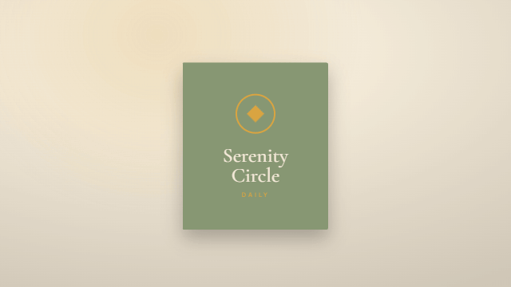

A Decision Can Be Good for Just One Evening
An evening with mixed feelings can still hold a decision that fits, even while bigger questions about recovery are open.
3 minute read

A decision about tonight can get tangled up with a much bigger question about the life you want. You may be deciding whether to go somewhere, what to tell the people who expect you there, or when you want to head home. Then a further question slips in. Is this how every weekend will be from now on? That question may matter to you, and it can take longer to answer than the invitation sitting on your phone. There’s room to give each question the amount of time it asks for.
In Alcoholics Anonymous’s Came to Believe, a contributor remembers sharing her experience with a woman who was newer to A.A. She understood the sharing as something she could do and describes patience as part of how she did it. The other woman had room to respond in her own time. Looking back, the contributor can speak about what the relationship meant to her while remaining unsure how much it helped the woman. Her account makes room for an action whose meaning and effects were still unfolding.
An endorsement in the praise section of Richard C. Schwartz’s No Bad Parts describes a different place to extend that patience. It presents Schwartz’s view that even the parts of ourselves we find hardest to welcome have a purpose and deserve compassion. In ordinary terms, a wish that complicates things may still tell you something about what matters to you. An A.A. contributor reflecting on service and an endorser describing Schwartz’s view of inner life are speaking about different experiences. Both make room for a response that leaves some things unsettled.
Imagine a friend invites you to a birthday dinner at a place where you used to drink. You’d like to be there when the cake comes out. You also know how much you’d enjoy waking up Saturday with the morning to yourself. And you miss the easy feeling of saying yes to an invitation without thinking through the whole evening. You might decide to go for dinner and leave when the group moves on. On the way home, you might still wish you could have stayed. That wish could say something as ordinary as how much you miss spending unhurried time with these friends.
A choice with a short reach leaves room for what you learn afterward. The part you miss might turn out to be the chance to talk to a friend you rarely see. Or you might realize the evening felt too short because you spent most of it catching up with people at the far end of the table. Either detail gives you something specific to consider the next time you see an invitation. The next occasion will also have its own details, including how much company you want that day and what you have going on the next morning.
It can feel awkward to let a choice stand when you still feel pulled in two directions. You might feel glad you went and a little sad to be home. Both feelings can belong to the same evening. The decision had a limited job. It gave you a way to spend that particular night with the information you had. There will be other evenings, and you can take those on their own terms when they arrive.
If you’d like, write one sentence about an upcoming decision that only needs to cover a single evening.
What would you want a decision about one evening to make room for?
Two books in conversation.
- 01
Came to Believe
This was patience supporting the action, though I didn’t call it patience at the time
About this source ↗ - 02
No Bad Parts
all parts, no matter how misguided, serve a purpose and should be met with compassion
About this source ↗
An original AI-generated reflection informed by these passages, with quotations checked against the source files. Interpretations can be imperfect. This site is independent of the authors and recovery fellowships cited, and does not provide treatment advice.